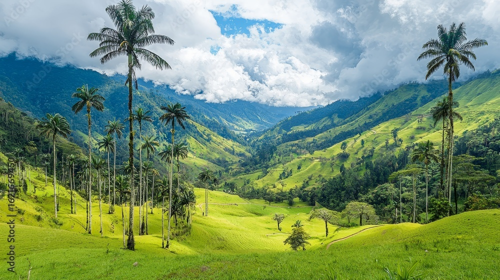
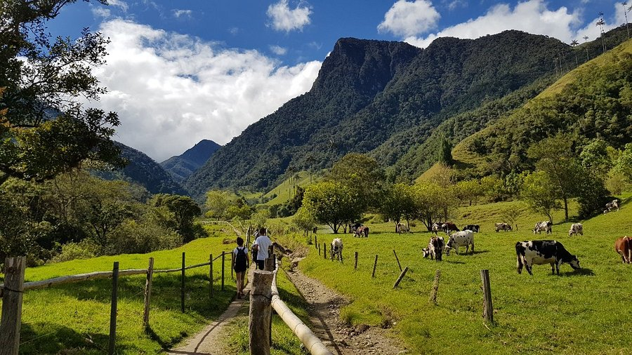

Senderismo
Recorre los senderos y disfruta de los paisajes naturales.

El Valle de Cocora es uno de los paisajes naturales más representativos de Colombia. Se encuentra en el departamento del Quindío y forma parte del Paisaje Cultural Cafetero.
Es famoso por sus enormes palmas de cera, consideradas uno de los grandes símbolos naturales de Colombia. Sus montañas verdes y sus extensos paisajes hacen de este lugar un destino perfecto para disfrutar de la naturaleza.

Salento, Quindío
Bosques y palmas de cera
Montañas y valles
Senderismo y exploración
Recorre los senderos y disfruta de los paisajes naturales.
Captura las montañas, los bosques y las famosas palmas de cera.
Descubre la flora y fauna que habita en este maravilloso lugar.
El Valle de Cocora combina naturaleza, aventura y paisajes impresionantes. Es un lugar ideal para conocer uno de los símbolos más importantes de Colombia y disfrutar de una experiencia rodeada de montañas y vegetación.